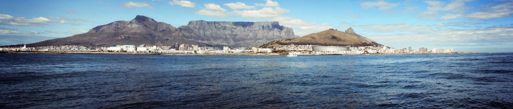
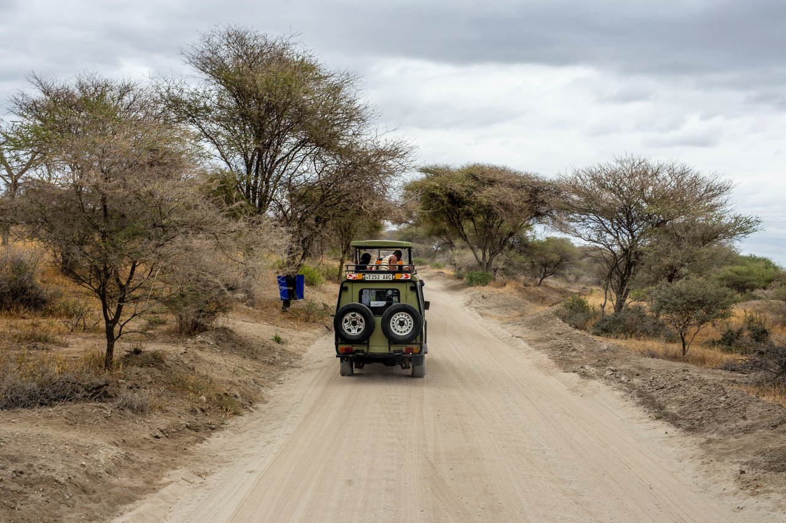

Is it true that the history of humanity began in Africa?
Both of our ancestor were black: according to the rule Gloger, the level of human skin pigmentation depends on the heat and humidity of the surrounding environment, so that living in Africa, the first people had to have dark skin, as well as today's Africans. At the same time, Mongoloid and Caucasoid owners of light skin have lost their pigment during the thousands of years spent away from the bright sun, in temperate latitudes. But this happened much later era of the first humans: only a hundred thousand years after the genetic Adam and Eve, their descendants moved out of Africa to go to his great journey around the planet.
How long have Africans eaten bananas?
The stereotypical belief that Africans lived exclusively fishing falling from the sky bananas and mangoes are not true. No bananas or mangoes, surprisingly, are not local cultures and were brought to Africa recently. Bananas, for example, arrived with immigrants from the islands of Indonesia. But Africans have come up with their own crops: in West Africa domesticated yams (still very common there dish), wild rice (not the one in Asia, but also very tasty), various types of millet and oil palm. It is very likely that, in Africa, and has been tamed by a special kind of wild hoofed animals - the ancestors of today's longhorn cows African savannah.
Africa has always been famous for its witchcraft. Still common in the continent
Almost any trouble occurring to a person, a family, a city, or even state in Africa today are attributed to witchcraft. Loss of livestock, lack of rain, the sudden death from illness, the death of a newborn baby or a grain crop, eaten by birds inadvertently fallen asleep watchman - all this is only one reason: some of the detractors used the black magic against people. This is a simple explanation, oddly enough, really helps not only to understand the world, but also to cope with difficulties. If a person is sick, it just means that at night on the wing of a bat flew into his house and set up a malicious witch fetish in his body.
The death is imminent unless the healer (the same wizard, but very good) will not be able to get it. Healer, however, it is usually possible: after a series of ceremonies and manipulation of the body of the sick person he deftly sucks the victim of a sorcerer tuft of grass, feathers, or stones. This treatment has a strong psychotherapeutic effect on the patient: feeling like enchanted, people often die simply from fear, after the same procedure "cure" from witchcraft patient will certainly believe in recovery. But if the disease still kill his loved ones will know: spells were too strong, you had to pay more money healer. With magic can not handle even the XXI century. The laws of a number of countries, witchcraft is officially forbidden in the Seychelles sorcerers gris-gris outlawed and sought as the most real criminals. African governments set up special "witches camps" into which dumped all over the country wizards and witches who were expelled from their relatives houses. Warlocks are often found among the maimed, the lame, the deaf people, they will almost inevitably be considered albinos, often the fear of witchcraft apply to twins, which in many parts of Africa is considered harbingers of disaster for the community.
Table Mountain
Table Mountain is the most iconic landmark of South Africa. It is also the country’s most photographed attraction and its famous cable car took millions of people to its top. Table Mountain has become the single most welcoming icon to not only our people, but travellers from all over the world. But this mountain hides many surprises that wait to be discovered. It is much more than a scenic photograph background or a place from where you can take a breathtaking photo of Cape Town. There are about 2,200 species of plants found on Table Mountain and 1470 floral species. Many of these plants and flowers are endemic to this mountain. The magnificent Kirstenbosch Botanical Gardens are found on the eastern foot of the mountain. Founded in 1913, the garden that spans an area of 1300 acres includes a unique conservatory with plants from different parts of the world. Besides the parks, the whole area has a biodiversity that is rare to find in other places on earth. Its many valleys and streams make it an idyllic getaway from Cape Town. The national park’s most unique feature is its fynbos vegetation that is displayed here better than anywhere in the world. The Cape Floral region of the national park is one of the richest floral regions in the world. Over 70% of the flowers are endemic to the Table Mountain. It is no wonder that the mountain was chosen as one of the new seven world wonders. Its fauna is no less thrilling either. Although animals such as the cape lion, mountain zebra or the leopard are no longer found here, the park is still home to caracals, rock hyraxes or chacma baboons. At the Boulders, penguins flock all over the place, a unique sight in Africa. The flat top peak of the mountain reaches 1,086 m above sea level, but being so close to the sea and to the city its features look more imposing.
Facts about the Table Mountain
- It is the only South African and only natural site on the planet to have a constellation of stars named after it. The constellation is called “Mensa”, which means ‘table’ in Latin.
- Having withstood 6 million years of erosion, it hosts the richest floral kingdom on earth, with more than 1 470 floral species.
- The Khoi people used to call the mountain Hoerikwaggo (Mountain of the Sea).
- The first European to climb it, Antonio de Saldanha, called it Taboa de Caba (Table of the Cape).
- The mountain is now officially recognized as one of the new seven world wonders.
- Table Mountain is often covered in cloud. The cloud that forms around the mountain is called “table cloth”.
- It is South Africa’s most photographed landmark.
- Table Mountain is featured on Cape Town’s flag.
- There are many caves on Table Mountain, the biggest one being Wynberg.
- Over 800,000 people visit it each year.
- The rocks on the mountain are over 600,000,000 years old making Table Mountain one of the oldest mountains in the world.
- More than 70% of all the plants found on the mountain are endemic, meaning they are not found anywhere else.
Ultimate Travel Destinations in Africa
When you think of visiting Africa, what comes to your mind? An African Safari? Ocean? Mountains? Jungle? You would agree with me that there are so many fun and exciting destinations in this great continent. Africa is a vast continent made up of 54 countries. Each country is different, and each has a variety of unique attractions.
Like never before, the continent of Africa has become more open for tourism, making these untapped countries fantastic travel destinations to experience the culture, heritage, and beauty of the locals. From popular destinations such as Cape Town with Table Mountain and Robben Island to the stunning and vast Masai Mara that you can explore by hot air balloon, the vacation destinations Africa has to offer are diverse, exciting and different. Full of history where you can walk in the footsteps of Nelson Mandela and full of natural beauty from the expanse of the Indian Ocean to the very peak of Mount Kilimanjaro, Africa has it all.
3 Unique Africa Destinations
A quick note about some of the top Africa travel and safari destinations:
1.South Africa
The jewel in the crown of African vacation destinations has to be South Africa. With a host of nature reserves and a colorful recent history the entire country from Johannesburg, over towards the east coast, Durban and then down through the Garden Route to Cape Town has everything a tourist to Africa could wish for. On a round Africa tour South Africa is often the last port of call and with its white-sand beaches, friendly people and host of UNESCO world heritage sites there is a good reason why South Africa is a must. TIP: South Africa is a top destination in Africa you can visit all year round destination and very affordable for those paying in dollars or pounds.
2.Egypt
Another country that is not commonly associated with Africa is Egypt. Over the last few decades, Egypt has been a top African destination for obvious reasons. The ancient pyramids of Giza are perhaps a must-see for any world traveler.
With the Red Sea proving some fantastic diving experiences, it should come as no surprise that Egypt is one of the top African countries for tourism all year round. TIP: The country’s investment in tourism is noticeable. Although the country has become more expensive to visit, it will be worth stopping by for at least a week.
3.Tanzania
Tanzania is a fast-growing tourist destination in East Africa. With tourism-focused primarily around the Serengeti National Park, Safaris is very much what Tanzania is all about.
Tanzania is also home to Africa’s highest mountain, Mount Kilimanjaro, a destination for the adventure hikers. An affordable holiday destination with many all-inclusive travel options, especially for those on safari, Tanzania is a country you will not regret visiting. TIP: To make the most of the animal migration in the Serengeti, the very best time to visit Tanzania is from July to October.